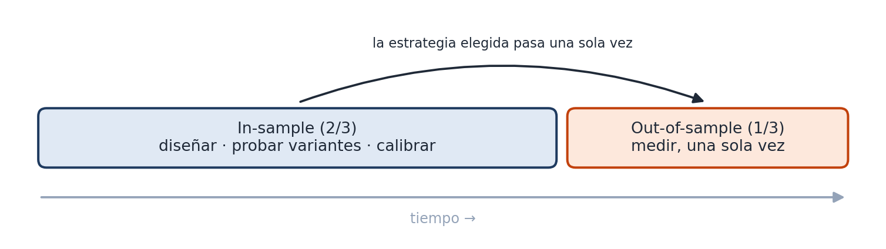
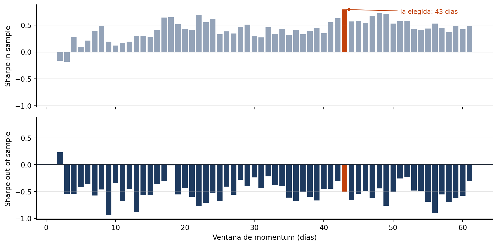
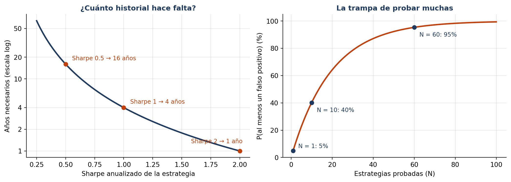
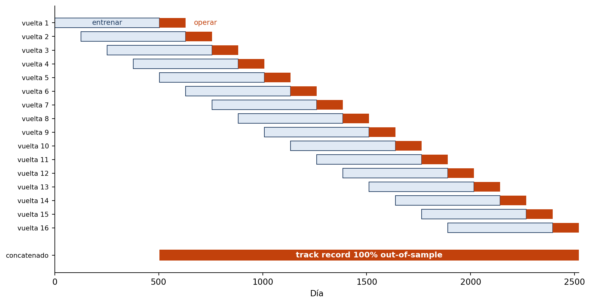
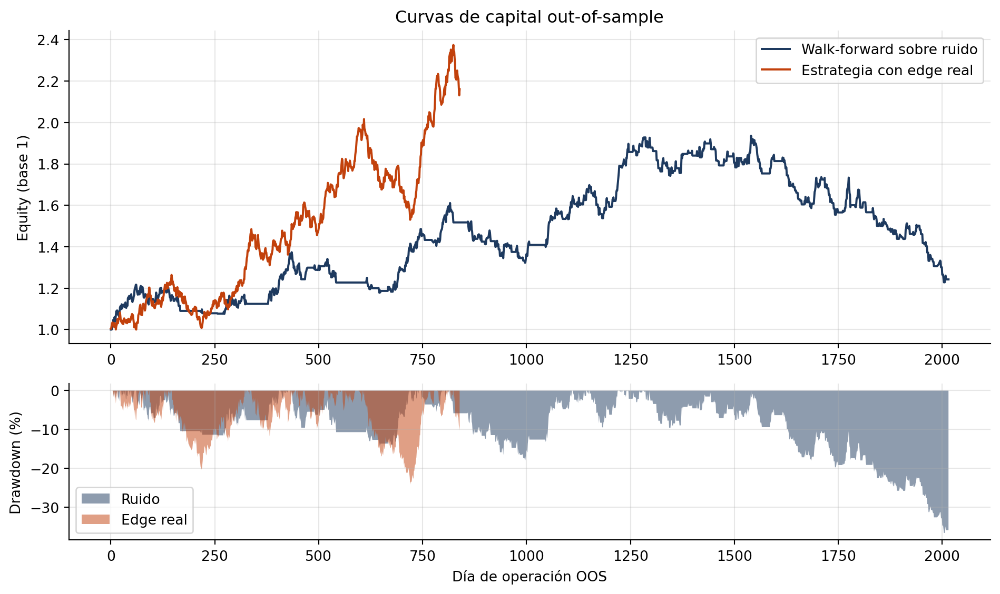

import numpy as np
import pandas as pd
import matplotlib.pyplot as plt
from scipy import stats
rng = np.random.default_rng(83)17 Capítulo 17: Backtesting de Estrategias
In-sample, out-of-sample, p-values y walk-forward
Resumen
Cualquier estrategia parece brillante evaluada sobre los datos con los que fue diseñada. Este capítulo construye la disciplina para saber si funciona de verdad: separación in-sample / out-of-sample, el peligro del sobreajuste y del data snooping, cómo calcular e interpretar el p-value de una estrategia, el análisis walk-forward como estándar profesional, y las métricas correctas para juzgar el desempeño fuera de muestra.
Introducción
Cerramos el módulo con la pregunta que une todo lo anterior: tenés una estrategia —una regla que decide cuándo comprar y vender— y su simulación histórica da ganancias. ¿Eso prueba algo?
Casi siempre, no. El problema es estructural: la estrategia se diseñó mirando esos mismos datos. Ajustaste parámetros, probaste variantes, descartaste lo que no andaba… y lo que sobrevivió, sobrevivió por construcción. Es como rendir un examen habiendo visto las respuestas: la nota no mide conocimiento.
El backtesting riguroso es el conjunto de prácticas para separar la señal de la casualidad. Es, en el fondo, el método científico aplicado al trading: hipótesis primero, evidencia después, y una paranoia saludable hacia los resultados demasiado lindos.
17.1 El pecado original: evaluar donde diseñaste
17.1.1 In-sample vs. out-of-sample
La división fundamental:
- In-sample (IS): los datos usados para diseñar la estrategia (elegir reglas, calibrar parámetros). Ahí la estrategia siempre luce bien — la elegiste porque lucía bien ahí.
- Out-of-sample (OOS): datos que la estrategia nunca vio. La única evidencia admisible sobre su capacidad real.

La demostración más contundente de por qué esto importa: vamos a “descubrir” una estrategia excelente en puro ruido.
# 10 años de retornos diarios SIN NINGUNA señal: puro azar con drift cero
n_dias = 2520
retornos = rng.normal(0.0, 0.012, n_dias)
train, test = retornos[:1680], retornos[1680:] # ~2/3 diseño, 1/3 evaluación
def estrategia_momentum(r, ventana):
"""Compra si la media de los últimos `ventana` días fue positiva."""
señal = np.array([r[max(0, t-ventana):t].mean() > 0 for t in range(len(r))])
return np.where(señal, r, 0.0) # invertido o en cash
def sharpe(r):
return r.mean() / r.std() * np.sqrt(252) if r.std() > 0 else 0.0
# "Investigación": probamos 60 ventanas distintas y elegimos la mejor IN-SAMPLE
ventanas = range(2, 62)
sharpes_is = {v: sharpe(estrategia_momentum(train, v)) for v in ventanas}
mejor_v = max(sharpes_is, key=sharpes_is.get)
print(f"Ventanas probadas: {len(list(ventanas))}")
print(f"Mejor ventana in-sample: {mejor_v} días → Sharpe IS = {sharpes_is[mejor_v]:.2f}")
print(f"La misma estrategia out-of-sample: Sharpe OOS = "
f"{sharpe(estrategia_momentum(test, mejor_v)):.2f}")Ventanas probadas: 60
Mejor ventana in-sample: 43 días → Sharpe IS = 0.79
La misma estrategia out-of-sample: Sharpe OOS = -0.51La Figura 17.2 muestra las 60 variantes a la vez: arriba, el Sharpe de cada ventana en el tramo de diseño; abajo, el de esa misma ventana en el tramo nunca visto.

Los datos son ruido puro por construcción — no hay nada que descubrir. Y sin embargo, probando 60 variantes, alguna siempre luce bien in-sample. Fuera de muestra, el castillo se derrumba. Ese mecanismo tiene nombre: data snooping (o p-hacking): probar hasta que algo “funcione” garantiza encontrar espejismos.
AdvertenciaLa regla de oro
Los datos out-of-sample se usan una sola vez. Si evaluás en OOS, no te gusta el resultado, retocás la estrategia y volvés a evaluar en el mismo OOS… el OOS acaba de convertirse en in-sample. Esta regla es incómoda y por eso casi nadie la cumple — y por eso la mayoría de los backtests publicados no se replican.
17.1.2 Sobreajuste: la curva que memoriza
El data snooping es la versión “entre estrategias” de un fenómeno general: el sobreajuste (overfitting). Un modelo con suficientes parámetros puede memorizar cualquier historia — incluyendo su ruido. Cuantos más parámetros libres tenga tu estrategia (ventanas, umbrales, filtros, horarios), más capacidad tiene de ajustarse a accidentes del pasado que no se repetirán.
Regla mental de López de Prado: la probabilidad de que un backtest sea falso crece con el número de configuraciones probadas — y quien lo publica rara vez te dice cuántas probó.
17.2 El p-value de una estrategia
¿Cómo cuantificar si un resultado OOS es “suerte o señal”? Con la misma lógica inferencial del Capítulo 15. La hipótesis nula es dura pero justa:
\(H_0\): la estrategia no tiene ninguna habilidad (retorno medio verdadero = 0).
Bajo \(H_0\), el estadístico t del retorno medio nos dice cuán sorprendente es lo observado:
\[t = \frac{\bar{r}}{s / \sqrt{n}} \qquad\text{y de hecho}\qquad t \approx \text{Sharpe anualizado} \times \sqrt{\text{años}}\]
Esa equivalencia es una de las fórmulas más útiles del oficio: el t-stat de una estrategia es su Sharpe por la raíz de los años observados. Un Sharpe de 1.0 necesita ~4 años para ser significativo al 5%; un Sharpe de 0.5, ¡16 años!
La Figura 17.3 dibuja las dos reglas que gobiernan este capítulo: cuánto historial hace falta para que un Sharpe sea creíble (izquierda), y cuán rápido se vuelve casi seguro encontrar un falso positivo cuando se prueban muchas variantes (derecha, el tema del recuadro que viene).

def evaluar(r, nombre):
n = len(r)
t_stat = r.mean() / (r.std(ddof=1) / np.sqrt(n))
p_value = 2 * (1 - stats.t.cdf(abs(t_stat), df=n - 1))
print(f"{nombre:<28} Sharpe: {sharpe(r):5.2f} | t: {t_stat:5.2f} | "
f"p-value: {p_value:.3f}")
# La estrategia "descubierta" en ruido, evaluada honestamente en OOS
evaluar(estrategia_momentum(test, mejor_v), "Momentum sobre ruido (OOS)")
# Una estrategia con señal genuina (le sembramos un edge real, pequeño)
señal_real = rng.normal(0.0004, 0.012, 840) # drift positivo verdadero
evaluar(señal_real, "Estrategia con edge real")Momentum sobre ruido (OOS) Sharpe: -0.51 | t: -0.93 | p-value: 0.352
Estrategia con edge real Sharpe: 1.30 | t: 2.37 | p-value: 0.018
AdvertenciaEl p-value con trampa múltiple
Cuidado: ese p-value asume que evaluaste una estrategia. Si probaste 60, la probabilidad de que alguna pase el umbral del 5% por puro azar es enorme (\(1 - 0.95^{60} \approx 95\%\)). Las correcciones (Bonferroni: exigir \(\alpha/N\); o el Deflated Sharpe Ratio de López de Prado) suben la vara según cuántas configuraciones miraste. La honestidad estadística empieza por contar tus intentos.
Simulador · La fábrica de falsos descubrimientos
El experimento del capítulo, con perillas: cuántas ventanas de momentum probás y cuántos años de ruido puro hay (dos tercios para diseñar, uno para evaluar). Arriba, las variantes como en la Figura 17.2; abajo, cómo crece el Sharpe in-sample de la mejor a medida que probás más, y lo que hace esa misma estrategia afuera. La muestra inicial es una en la que el espejismo se ve nítido, como la del capítulo; “Nuevo ruido” genera otras historias (no todas tan llamativas), y el interruptor repite el experimento 100 veces para ver el patrón y no una muestra elegida.
17.3 Walk-forward: el estándar profesional
La partición simple IS/OOS tiene una debilidad: la evaluación depende de un corte particular. Además, las estrategias reales se recalibran periódicamente. El análisis walk-forward resuelve ambas cosas imitando la operatoria real:
- Entrená (elegí parámetros) con una ventana de datos.
- Operá con esos parámetros el período siguiente (nunca visto).
- Rodá la ventana hacia adelante y repetí.
- Concatená todos los tramos operados: eso es tu track record 100% out-of-sample.
La Figura 17.4 dibuja el esquema con los números que vamos a usar: dos años para entrenar, medio año para operar, y la ventana que avanza medio año por vez.

def walk_forward(retornos, n_train, n_test, ventanas):
"""Reoptimiza la ventana de momentum en cada tramo y opera el siguiente."""
oos, elecciones = [], []
inicio = 0
while inicio + n_train + n_test <= len(retornos):
tramo_train = retornos[inicio : inicio + n_train]
tramo_test = retornos[inicio + n_train : inicio + n_train + n_test]
# Optimización SOLO dentro del tramo de entrenamiento
v_opt = max(ventanas, key=lambda v: sharpe(estrategia_momentum(tramo_train, v)))
elecciones.append(v_opt)
# Operamos el tramo siguiente con lo elegido
oos.append(estrategia_momentum(tramo_test, v_opt))
inicio += n_test # la ventana rueda
return np.concatenate(oos), elecciones
# Sobre el ruido puro: el walk-forward no se deja engañar
oos_ruido, elecciones = walk_forward(retornos, n_train=504, n_test=126,
ventanas=range(2, 62))
print(f"Tramos operados: {len(elecciones)} | Ventanas elegidas: {elecciones}")
evaluar(oos_ruido, "Walk-forward sobre ruido")Tramos operados: 16 | Ventanas elegidas: [43, 17, 47, 43, 52, 7, 22, 10, 8, 2, 2, 2, 57, 2, 12, 2]
Walk-forward sobre ruido Sharpe: 0.27 | t: 0.77 | p-value: 0.440Dos observaciones valiosas: las ventanas elegidas saltan erráticamente de tramo en tramo — señal inequívoca de que no hay estructura real que estimar, solo ruido que cambia de disfraz. Y el desempeño concatenado es mediocre, como debe ser. Un walk-forward con parámetros estables entre tramos y desempeño OOS consistente es de las mejores señales de que una estrategia es genuina.
17.4 Métricas para juzgar el track record OOS
Con el track record fuera de muestra en la mano, ¿qué mirar? Ninguna métrica sola alcanza; el tablero mínimo:
| Métrica | Qué mide | Talón de Aquiles |
|---|---|---|
| Sharpe anualizado | Retorno en exceso por unidad de riesgo | Ciego a la asimetría y a las rachas |
| Máximo drawdown | La peor caída pico-a-valle | Una sola observación; muy sensible al período |
| Hit ratio | % de períodos ganadores | Ignora tamaños: podés acertar 60% y quebrar |
| Profit factor | Ganancias brutas / pérdidas brutas | Inestable con pocas operaciones |
def reporte(r, nombre):
equity = np.cumprod(1 + r)
picos = np.maximum.accumulate(equity)
drawdown = equity / picos - 1
hit = (r[r != 0] > 0).mean() if (r != 0).any() else np.nan
print(f"— {nombre}")
print(f" Sharpe: {sharpe(r):6.2f}")
print(f" Retorno anual: {r.mean() * 252:6.1%}")
print(f" Máx. drawdown: {drawdown.min():6.1%}")
print(f" Hit ratio: {hit:6.1%}")
return equity, drawdown
equity_r, dd_r = reporte(oos_ruido, "Walk-forward sobre ruido")
print()
equity_e, dd_e = reporte(señal_real, "Estrategia con edge real")— Walk-forward sobre ruido
Sharpe: 0.27
Retorno anual: 3.6%
Máx. drawdown: -36.6%
Hit ratio: 50.3%
— Estrategia con edge real
Sharpe: 1.30
Retorno anual: 25.0%
Máx. drawdown: -24.1%
Hit ratio: 54.3%fig, axes = plt.subplots(2, 1, figsize=(10, 6), sharex=False,
gridspec_kw={"height_ratios": [2, 1]})
ax = axes[0]
ax.plot(equity_r, label="Walk-forward sobre ruido")
ax.plot(equity_e, label="Estrategia con edge real")
ax.set_ylabel("Equity (base 1)")
ax.set_title("Curvas de capital out-of-sample")
ax.legend()
ax.grid(True, alpha=0.3)
ax = axes[1]
ax.fill_between(range(len(dd_r)), dd_r * 100, 0, alpha=0.5, label="Ruido")
ax.fill_between(range(len(dd_e)), dd_e * 100, 0, alpha=0.5, label="Edge real")
ax.set_ylabel("Drawdown (%)")
ax.set_xlabel("Día de operación OOS")
ax.legend()
ax.grid(True, alpha=0.3)
plt.tight_layout()
plt.show()
Como en la Figura 17.5, leé siempre la curva de capital junto con la de drawdown: el Sharpe resume, pero la trayectoria muestra si las ganancias vinieron parejas o de un golpe de suerte, y cuánto dolor (drawdown) hubo que aguantar en el camino. Un inversor real abandona la estrategia en el fondo del drawdown — si ese fondo es -40%, el Sharpe final es teoría.
17.4.1 Los costos que el backtest olvida
Antes de creer cualquier número OOS, restale la realidad:
- Costos de transacción y slippage: una estrategia que rota mucho puede morir solo de comisiones. Simulá con costos por operación.
- Sesgo de supervivencia: si tu universo actual excluye las empresas que quebraron, el pasado luce mejor de lo que fue.
- Look-ahead bias: usar información que no estaba disponible en el momento de la decisión (balances publicados con retraso, precios de cierre para decidir “durante” el día).
- Capacidad: el backtest asume que tus órdenes no mueven el precio; a mayor escala, deja de ser cierto.
costo_por_operacion = 0.0005 # 5 puntos básicos por cambio de posición
señal = np.array([test[max(0, t-mejor_v):t].mean() > 0 for t in range(len(test))])
cambios = np.abs(np.diff(señal.astype(int), prepend=0))
r_neto = np.where(señal, test, 0.0) - cambios * costo_por_operacion
print(f"Operaciones (cambios de posición): {cambios.sum()}")
print(f"Sharpe bruto: {sharpe(np.where(señal, test, 0.0)):.2f}")
print(f"Sharpe neto de costos: {sharpe(r_neto):.2f}")Operaciones (cambios de posición): 66
Sharpe bruto: -0.51
Sharpe neto de costos: -0.6017.5 El protocolo, en síntesis
Un backtest confiable sigue esta secuencia — y el orden importa:
- Hipótesis primero: por qué debería funcionar (fundamento económico), antes de mirar datos.
- Diseño in-sample, con la menor cantidad de parámetros posible.
- Contá tus intentos: cada variante probada infla el umbral de significancia exigible.
- Walk-forward para generar un track record 100% OOS con recalibración realista.
- Costos, siempre: comisiones, slippage, y los sesgos de datos.
- Inferencia honesta: t-stat/p-value del track record OOS, corregido por múltiples pruebas.
- El OOS se usa una vez. Si volvés a diseñar, necesitás datos nuevos (o esperar a que el mercado los genere).
flowchart LR
H["<b>1 · Hipótesis</b><br/>por qué debería<br/>funcionar"] --> D["<b>2 · Diseño IS</b><br/>pocos parámetros"]
D --> C["<b>3 · Contar<br/>intentos</b><br/><i>N variantes</i>"]
C --> W["<b>4 · Walk-forward</b><br/>track record OOS"]
W --> K["<b>5 · Costos</b><br/>comisiones, slippage,<br/>sesgos de datos"]
K --> I["<b>6 · Inferencia</b><br/>t, p-value<br/>corregido por N"]
I --> F(["<b>7 · Veredicto</b>"])
I -.->|"¿no me gusta?<br/>rediseño…"| D
classDef paso fill:#e0e9f4,stroke:#1e3a5f,color:#1f2937
classDef clave fill:#fde8dc,stroke:#c2410c,color:#1f2937
classDef fin fill:#eef2e3,stroke:#637238,color:#1f2937
class H,D,W,K paso
class C,I clave
class F fin
17.6 Con datos reales
Todo el capítulo trabajó sobre ruido fabricado, donde sabíamos la respuesta de antemano. El examen final es con datos donde nadie sabe la respuesta: corremos el walk-forward completo sobre cinco años del SPY, del dataset del libro (datos/precios.csv, ver Apéndice B).
precios = pd.read_csv("../datos/precios.csv", index_col="Date", parse_dates=True)
r_spy = precios["SPY"].pct_change().dropna().values
oos_spy, elec_spy = walk_forward(r_spy, n_train=504, n_test=126, ventanas=range(2, 62))
print(f"Tramos operados: {len(elec_spy)} | Ventanas elegidas: {elec_spy}")
evaluar(oos_spy, "Momentum SPY (walk-forward)")
evaluar(r_spy[-len(oos_spy):], "Buy & hold SPY (mismo período)")
_ = reporte(oos_spy, "Momentum SPY (OOS)")
print()
_ = reporte(r_spy[-len(oos_spy):], "Buy & hold SPY")Tramos operados: 5 | Ventanas elegidas: [16, 10, 11, 9, 12]
Momentum SPY (walk-forward) Sharpe: 0.92 | t: 1.45 | p-value: 0.149
Buy & hold SPY (mismo período) Sharpe: 1.31 | t: 2.07 | p-value: 0.039
— Momentum SPY (OOS)
Sharpe: 0.92
Retorno anual: 9.1%
Máx. drawdown: -15.1%
Hit ratio: 56.7%
— Buy & hold SPY
Sharpe: 1.31
Retorno anual: 20.8%
Máx. drawdown: -18.8%
Hit ratio: 57.5%Este resultado es una clase entera de honestidad estadística, así que leelo despacio:
- Las ventanas elegidas son estables entre tramos — nada del salto errático que vimos sobre ruido puro. Eso sugiere que el momentum del índice tiene algo de estructura real.
- El Sharpe out-of-sample es positivo, pero el p-value no baja del umbral: con ~2.5 años de track record OOS, la fórmula \(t \approx \text{Sharpe} \times \sqrt{\text{años}}\) hace su trabajo implacable. Un Sharpe cercano a 1 con dos años y medio de datos no es evidencia suficiente — verificalo vos mismo con la fórmula.
- Y la comparación que un backtest siempre debe incluir: en el mismo período, comprar y no hacer nada rindió más. El período OOS fue mayormente alcista, y toda estrategia que pasa tiempo en cash paga ese costo. El consuelo del momentum es un drawdown máximo menor — es una estrategia defensiva, y su valor aparecería en un bear market largo, no en este tramo. Elegir el benchmark correcto es parte del protocolo.
Ah, y esto es antes de costos de transacción. La conclusión metodológica —no sobre el momentum sino sobre el oficio— es que un backtest honesto casi nunca da un veredicto rotundo: da matices, condiciones y un p-value incómodo. Desconfiá de los que no.
17.7 Errores comunes
AdvertenciaTrampas frecuentes
- Re-usar el out-of-sample: la más común y la más letal. Cada iteración de “ajusto y vuelvo a probar” lo degrada a in-sample.
- Reportar el mejor de N sin decir N: el Sharpe del mejor de 100 intentos es una estadística de orden, no una medida de habilidad.
- Ignorar la estabilidad de los parámetros: si el óptimo salta de 5 a 60 entre tramos del walk-forward, no estás estimando nada real.
- Backtests demasiado cortos: recordá \(t \approx \text{Sharpe} \times \sqrt{\text{años}}\); con 2 años de datos casi nada es demostrable.
- Confundir el drawdown máximo del backtest con el peor caso posible: el futuro no está obligado a repetir el peor pasado; es un piso, no un techo.
17.8 Ejercicios Propuestos
ImportanteEjercicios
- La lotería de estrategias: generá 100 series de ruido, “optimizá” la ventana de momentum en cada una y graficá el histograma de Sharpes in-sample del mejor parámetro. ¿Cuántos superan 1.0?
- Bonferroni en acción: con el experimento anterior, aplicá la corrección de Bonferroni (\(\alpha/60\)) al p-value del mejor Sharpe IS. ¿Sobrevive alguno?
- Walk-forward con edge: sembrá una señal real débil (drift condicional a la señal de momentum) y verificá que el walk-forward la detecta: parámetros estables y Sharpe OOS positivo.
- Sensibilidad a costos: para la estrategia con edge del capítulo, encontrá el costo por operación que lleva su Sharpe neto a cero. ¿Es un costo realista para un inversor minorista?
- Tu propio protocolo: elegí una regla simple (cruce de medias móviles, por ejemplo), escribí la hipótesis económica ANTES de correr nada, y ejecutá el protocolo completo de 7 pasos sobre alguna de las acciones del dataset del libro (
datos/precios.csv). Documentá cuántas variantes probaste.
Podés resolver estos ejercicios acá mismo: la celda ejecuta Python en tu navegador, sin instalar nada (la primera ejecución tarda unos segundos mientras carga el entorno; los paquetes que importes se instalan solos).